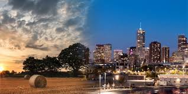
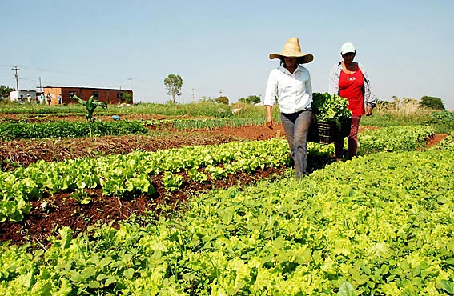

projetos

interdependência campo e cidade
conheça a interdependência existente entre o campo e a cidade.

relação
campo e cidade, conexão
video
assista a um video que demonstra a relação entre o campo e a cidade